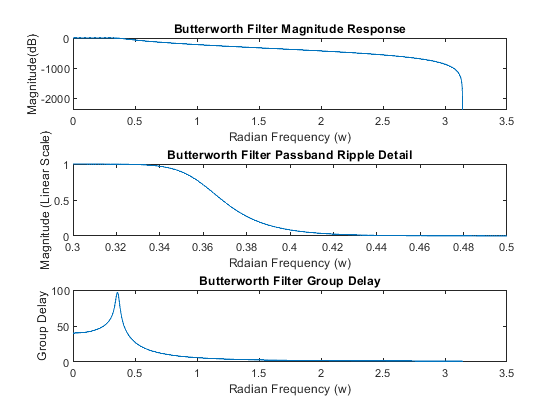

Contents
clc;
close all;
clear variables;
load projIB
html = true;
(a)
if(html == true)
close all;
end
Gsb_max = -55;
Gpb_max = 40;
Gpb_min = 37;
Rp = Gpb_max-Gpb_min;
Rs = Gpb_max-Gsb_max;
Wp = 2500/(fs/2);
Ws = 4000/(fs/2);
filters = ["Butterworth", "Chebyshev Type 1", "Chebyshev Type 2", "Elliptic", "Parks-Mclellan", "Kaiser"];
filter_orders = zeros(1,size(filters,2));
filter_multiplications = zeros(1,size(filters,2));
Butterworth IIR
if(html == true)
close all;
end
[n_buttord,Wn_buttord] = buttord(Wp,Ws,Rp,Rs);
[z_buttord,p_buttord,k_buttord] = butter(n_buttord, Wn_buttord);
[b_buttord, a_buttord] = zp2tf(z_buttord,p_buttord,k_buttord);
sos = zp2sos(z_buttord,p_buttord,k_buttord);
filter_orders(1) = n_buttord;
filter_multiplications(1) = length(a_buttord) + length(b_buttord);
graph_appropriate_graphs(dfilt.df1sos(sos), fs, noisy, "Butterworth", false);

Chebyshev Type 1
if(html == true)
close all;
end
[n_chebyshev_1,Wp_chebyshev_1] = cheb1ord(Wp,Ws,Rp,Rs);
[z_chebyshev_1,p_chebyshev_1, k_chebyshev_1] = cheby1(n_chebyshev_1, Rp, Wp_chebyshev_1);
[b_chebyshev_1,a_chebyshev_1] = zp2tf(z_chebyshev_1,p_chebyshev_1,k_chebyshev_1);
sos = zp2sos(z_chebyshev_1,p_chebyshev_1,k_chebyshev_1);
filter_orders(2) = n_buttord;
filter_multiplications(2) = length(a_chebyshev_1) + length(b_chebyshev_1);
graph_appropriate_graphs(dfilt.df1sos(sos), fs, noisy, "Chebyshev Type 1", false);
Chebyshev Type 2
if(html == true)
close all;
end
[n_chebyshev_2,Ws_chebyshev_2] = cheb2ord(Wp,Ws,Rp,Rs);
[z_chebyshev_2,p_chebyshev_2, k_chebyshev_2] = cheby2(n_chebyshev_2, Rs, Ws_chebyshev_2);
[b_chebyshev_2,a_chebyshev_2] = zp2tf(z_chebyshev_2,p_chebyshev_2,k_chebyshev_2);
sos = zp2sos(z_chebyshev_2,p_chebyshev_2,k_chebyshev_2);
filter_orders(3) = n_chebyshev_2;
filter_multiplications(3) = length(a_chebyshev_2) + length(b_chebyshev_2);
graph_appropriate_graphs(dfilt.df1sos(sos), fs, noisy, "Chebyshev Type 2", false);
Elliptic
if(html == true)
close all;
end
[n_elliptic,Wp_elliptic] = ellipord(Wp,Ws,Rp,Rs);
[z_elliptic,p_elliptic,k_elliptic] = ellip(n_elliptic,Rp,Rs,Wp_elliptic);
[b_elliptic,a_elliptic] = zp2tf(z_elliptic,p_elliptic,k_elliptic);
sos = zp2sos(z_elliptic,p_elliptic,k_elliptic);
filter_orders(4) = n_elliptic;
filter_multiplications(4) = length(a_elliptic) + length(b_elliptic);
graph_appropriate_graphs(dfilt.df1sos(sos), fs, noisy, "Elliptic", false);
Parks-Mclellan
if(html == true)
close all;
end
ParksMcClellan = designfilt('lowpassfir','PassbandFrequency',2500,'StopbandFrequency',4000,'PassbandRipple',Rp,'StopbandAttenuation',Rs,'SampleRate',fs,'DesignMethod','equiripple');
[filter_order, multiplications] = compute_order_mult(ParksMcClellan);
filter_orders(5)= filter_order;
filter_multiplications(5) = multiplications;
graph_appropriate_graphs(ParksMcClellan , fs, noisy, "Parks-Mclellan", false);
Kaiser
if(html == true)
close all;
end
Kaiser = designfilt('lowpassfir','PassbandFrequency',2500,'StopbandFrequency',4000,'PassbandRipple',Rp,'StopbandAttenuation',Rs,'SampleRate',fs,'DesignMethod','kaiserwin');
[filter_order, multiplications] = compute_order_mult(Kaiser);
filter_orders(6)= filter_order;
filter_multiplications(6) = multiplications;
graph_appropriate_graphs(Kaiser, fs, noisy, "Kaiser", false);
Table of Filter Orders and Filter Multiplications
if(html == true)
close all;
end
T = table(filters.', filter_orders.');
T.Properties.VariableNames = {'Filter','Filter Order'};
T
T2 = table(filters.', filter_multiplications.');
T2.Properties.VariableNames = {'Filter','Filter Multiplications'};
T2
T =
6×2 table
Filter Filter Order
__________________ ____________
"Butterworth" 23
"Chebyshev Type 1" 23
"Chebyshev Type 2" 11
"Elliptic" 8
"Parks-Mclellan" 80
"Kaiser" 187
T2 =
6×2 table
Filter Filter Multiplications
__________________ ______________________
"Butterworth" 48
"Chebyshev Type 1" 24
"Chebyshev Type 2" 24
"Elliptic" 18
"Parks-Mclellan" 82
"Kaiser" 189
Noisy vs. Filtered Sound
if(html == true)
close all;
end
soundsc(noisy, fs)
audiowrite('noisy.wav', noisy, fs);
Functions
function [filter_order, multiplications] = compute_order_mult(filter_input)
filter_order = filtord(filter_input);
[b,a] = tf(filter_input);
multiplications = length(b) + length(a);
end
function graph_appropriate_graphs(filter_input, fs, noisy, filter_name, play_sound)
[h,w] = freqz(filter_input, fs);
mag_db = 20*log10(abs(h));
figure;
subplot(3,1,1);
plot(w, mag_db);
title (filter_name + ' Filter Magnitude Response');
xlabel('Radian Frequency (w)');
ylabel('Magnitude(dB)');
subplot(3,1,2);
plot(w,abs(h));
xlim([0.3, 0.5]);
title (filter_name + ' Filter Passband Ripple Detail');
xlabel('Rdaian Frequency (w)');
ylabel('Magnitude (Linear Scale)');
subplot(3,1,3);
[gd,w] = grpdelay(filter_input, fs);
plot(w,gd);
title (filter_name + ' Filter Group Delay');
xlabel ('Radian Frequency (w)');
ylabel ('Group Delay');
figure;
[z, p, k] = zplane(filter_input);
zplane(z,p);
title(filter_name + ' Filter Pole-Zero Plot');
figure;
[impResp,t] = impz(filter_input, 100);
stem(t,impResp);
title(filter_name + ' Filter Impulse Response');
xlabel('Samples');
ylabel('Magnitude');
filtered = filter(filter_input, noisy);
if play_sound
soundsc(filtered, fs)
end
audiowrite(filter_name+'.wav', filtered, fs);
end